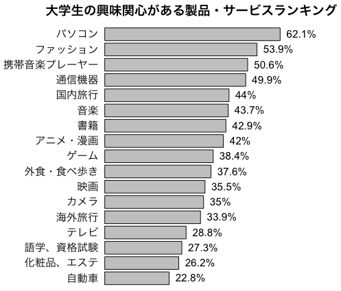

日本自動車工業会の市場動向調査から，大学生の興味関心がある製品・サービスランキング。ただし，Web調査である。
複数回答の場合は，棒の間のスペースを残しておく。また，絶対に円グラフにしない。
# quartz(width=5.835630, height=5.424213) # Mac
par(mar=c(1,9,4,6)+0.1) # マージン c(5,4,4,2)+0.1
par(mgp=c(2,0.5,0)) # プロットマージン c(3,1,0)
par(xpd=TRUE) # プロットエリア外に text() を描く
製品サービス=c("パソコン",
"ファッション",
"携帯音楽プレーヤー",
"通信機器",
"国内旅行",
"音楽",
"書籍",
"アニメ・漫画",
"ゲーム",
"外食・食べ歩き",
"映画",
"カメラ",
"海外旅行",
"テレビ",
"語学、資格試験",
"化粧品、エステ",
"自動車")
割合=c(62.1, 53.9, 50.6, 49.9, 44.0, 43.7, 42.9, 42.0, 38.4,
37.6, 35.5, 35.0, 33.9, 28.8, 27.3, 26.2, 22.8)
t = barplot(rev(割合), horiz=TRUE, axes=FALSE)
text(割合, rev(t)-0.1, paste(割合,"%",sep=""), pos=4)
text(0, rev(t)-0.1, 製品サービス, pos=2, family="HiraKakuPro-W3")
mtext("大学生の興味関心がある製品・サービスランキング",
cex=1.2, family="HiraKakuPro-W6")

Last modified: 2009-05-10 16:24:31